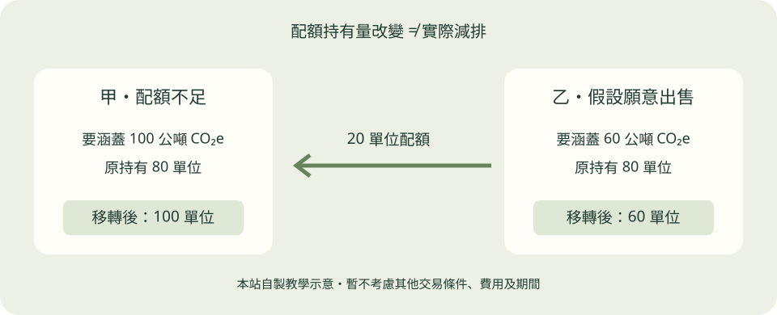

排放、配額與履約
溫室氣體的排放可用二氧化碳當量（CO₂ equivalent, CO₂e）表示。排放量與配額是不同概念：持有配額不代表已排放，取得配額也不等於實際減排。
總量管制與交易（cap and trade）同時包含排放總量限制與配額流通。EU ETS 要求企業監測、申報排放，並繳交足額配額；繳交以符合制度義務的過程稱為履約。
依據：歐盟執委會 About the EU ETS，制度入門與配額說明；查詢 2026-11-16。
買賣需求的示意
示意範例假設甲要涵蓋 100 公噸 CO₂e，持有 80 單位配額；乙要涵蓋 60 公噸 CO₂e，持有 80 單位。每單位配額在此對應一公噸 CO₂e，並暫時不考慮其他資格、期間與費用。
| 企業 | 要涵蓋的排放 | 持有配額 | 可能需求 |
|---|---|---|---|
| 甲 | 100 公噸 CO₂e | 80 單位 | 缺少 20 單位 |
| 乙 | 60 公噸 CO₂e | 80 單位 | 有 20 單位餘額 |
雙方可能有交易機會，但餘額不保證出售意願，數量吻合也不保證符合所有交易條件。甲若取得 20 單位，改變的是持有配額；不能直接說甲已少排 20 公噸。
制度、交易單位與登記紀錄
EU ETS
歐盟排放交易體系（European Union Emissions Trading System）：規範涵蓋對象、配額與履約的制度。
EUA
歐盟排放配額（EU Allowance）：一單位對應一公噸二氧化碳當量的排放權利。
EUTL 與 Union Registry
歐盟交易紀錄系統（European Union Transaction Log, EUTL）及聯盟登記系統的公開資訊，涉及持有、移轉與履約紀錄，不保證提供每筆市場成交價。
依據：About the EU ETS、Union Registry；查詢 2026-11-16。成交價限制另依本機 CSV 表頭及 Abrell（2024）第 9～10 頁核對。
EU ETS 作為研究背景
EU ETS 提供可追溯的官方制度說明與登記資料入口，適合用來核對研究中的規則、單位與紀錄。資料仍可能存在缺漏與版本差異；採用此背景不代表所有計畫商品都能直接換算或等同 EUA。
CM03 §3.2.1 同時涉及綠能與憑證，並將購買方稱為 Receivers、出售方稱為 Entities。研究使用 EU ETS 資料之前，需要釐清商品與制度範圍的對應。
原文定位
- §3.2.1 ET problem
段落起句：Two types of permits are sold, including green energy corporate and green
- §3.2.1 ET problem
段落起句：In this study, the corporates that purchase permits are denoted as Receivers.
研究資料需求
制度理解的直接依據是官方規則與適用期間；交易配對則還需要供需、資格、交易條件與目標函數輸入。市場價格與移轉紀錄屬於不同資料來源，應依模型需求蒐集，避免把缺少的欄位當成已知。
概念檢核：配額取得與實際減排
取得配額改變的是持有額度；實際減排需要排放量變化的證據。EUA 是配額，EUTL 涉及紀錄，不能將紀錄系統當成每筆成交價格資料庫。
